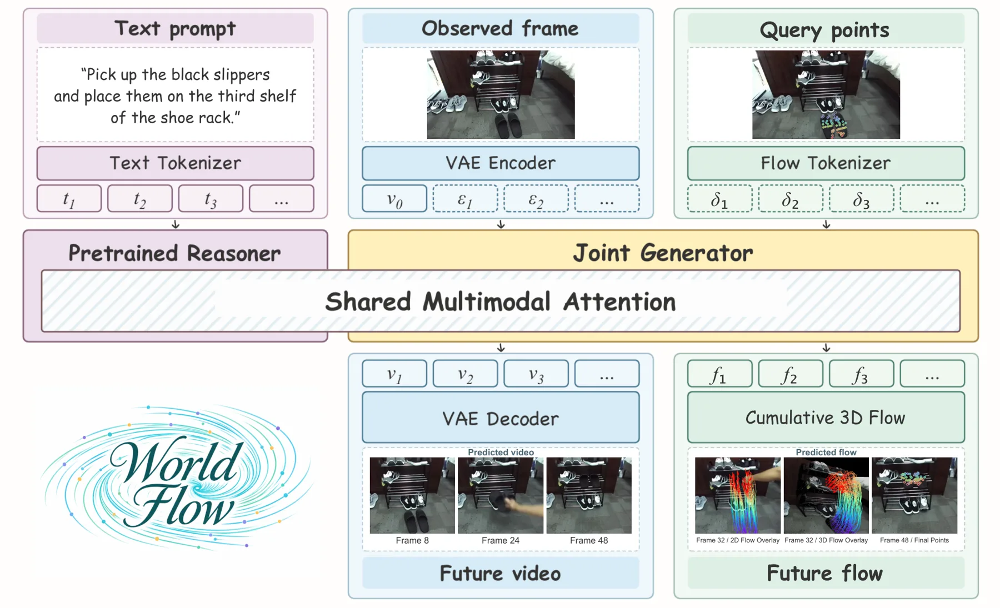
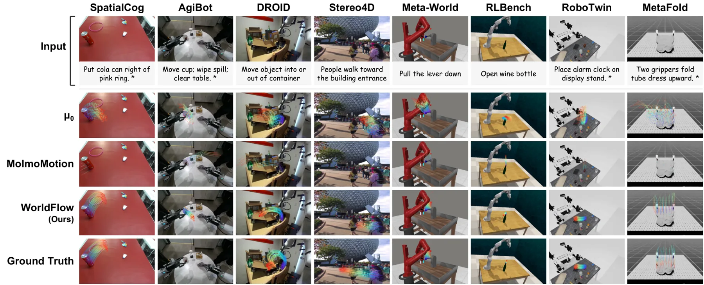

WorldFlow：用大规模预训练联合预测视频与 3D 运动
WorldFlow: Joint Video and 3D Motion Prediction via Large-Scale Pretraining
统一 MoT 主干同时生成“未来视频”和“查询点 3D 位移 token”，3D 位移与视频网格共享坐标，因此两种模态互相监督；1.44M 样本预训练 + 自建 1,678 样本基准。SpatialCog ADE 0.060 m（最强外部基线 0.131）、FDE 0.248→0.078（相对纯流变体 −68.5%）；真机操作流预测 97.2% vs μ0 25.0%。但 Real3 上零流 Static 参考 ADE 0.062 反而优于本方法 0.081，该子集指标需谨慎。
ADE on SpatialCog
FDE reduction vs flow-only
flow prediction success
robot execution success
作者、单位与技术谱系 · Research context
作者与单位
研究脉络
- 生成式视频世界模型（Wan et al., 2025；Seedance, 2026）方法基座关系：本文建立在预训练视频生成模型之上，但明确指出它们“把 3D 动态留在像素里、隐式不可用”，因此要加一条显式 3D 流输出通道。[论文 §1]
- 动作世界模型（Zhou et al., 2026；Yuan et al., 2026；NVIDIA, 2026）方法上游关系：这条线把动作接进世界模型，但动作监督贵且与具体构型绑定；本文改用“查询点 3D 位移”作为跨构型的中间表示。[论文 §1]
- 3D 跟踪与流预测基线（NovaFlow、Track4World、4RC、μ0、MolmoMotion）对照上游关系：这些方法要么先出视频再跟踪、要么直接回归流，本文把它们同时作为两类对照，用来论证“联合生成优于后处理跟踪、也优于纯流回归”。[论文 §4.3.2 与 Table 1]
合作网络
- RoboScience × NUSRoboScience → National University of Singapore（Lin Shao）关系：共同署名（双单位）[论文首页署名]
- 项目页RoboScience 团队 → WorldFlow关系：官方项目页（含演示）[项目页]
- WorldFlowBenchWorldFlow 团队 → 11 个公开数据源（AgiBot、DROID、Stereo4D、Meta-World、RLBench、RoboTwin 等）关系：数据依赖（自建基准聚合公开数据）[论文 §4.1 与附录 A]
作者角色（共同一作、项目负责人、通讯）在首页脚注有明确标注；单位编号 1/2 对应 RoboScience 与 NUS。合作边仅记录共同署名与项目页，未推断导师关系；基准的数据来源作为技术依赖记录，不视为合作。
方法本质拆解 · What actually changed
是不是微调？
是从预训练视频模型出发的大规模训练/继续预训练，不是小样本微调：模型在 144 万 object-level 样本上训练，MoT 主干同时学视频与 3D 流两种模态，另有辅助运动目标监督干净流。
有没有额外约束？
核心约束是模态对齐：3D 位移被参数化成与视频网格同坐标的连续 token，使两种模态共享同一时空参考；此外辅助损失显式约束位移、累积运动方向与轨迹端点，防止只对齐像素外观而丢掉度量尺度。
推理/后端到底做了什么？
推理是一次联合去噪：给定图像、指令与查询点，主干同时生成未来视频 token 与查询点位移 token，位移直接解码成米制 3D 轨迹，不需要再跑跟踪器；这也是它比“先生成视频再跟踪”管线更准的原因（SpatialCog 0.060 vs 0.083/0.098）。
方法本质是什么？
本质是把“几何预测”变成生成模型的另一个输出通道，用视频的稠密外观监督去补 3D 流监督的稀疏性。效果是 3D 运动预测显著变准并能直接驱动操作；代价是必须给定查询点，且监督质量受自动轨迹生成限制。
输入单帧 RGB + 指令 + 查询点，输出未来视频与米制 3D 查询点轨迹；改动的是“3D 流从后处理变成联合生成目标”，直接效果是 SpatialCog ADE 0.060 m、真机执行成功率 66.7%。

桥接价值Bridge
桥接价值
我们关心“几何怎么变成决策”，这篇给了一条具体通路：把 3D 位移做成可直接生成的 token，于是世界模型的输出天生就是几何量，控制端不需要再跑一遍跟踪。更关键的是它的对照结构——同一主干、同一数据、同一优化配方，只切换“只生成流”与“联合生成视频+流”，把视觉监督对 3D 运动的价值单独隔离出来。这种“只改一个变量”的做法，正是我们在状态估计消融里想坚持的。
方法与模块Method
方法摘要
输入是一帧 RGB、一段语言指令和一组查询点；3D 运动被参数化为与视频网格对齐的连续位移 token（用初始点几何做锚），视频 token 与流 token 由统一的 Mixture-of-Transformers 主干在 rectified-flow 目标下联合去噪，另有辅助运动目标（位移、累积运动方向、轨迹端点）监督重建出的干净流。训练数据是 144 万个 object-level 样本（仿真 + 真实），覆盖操作、人-物交互与野外场景；评测用自建的 WorldFlowBench（1,678 样本 / 11 来源，含 SpatialCog 空间推理子集）。
可迁移模块
三个模块可搬：一是“把几何量做成生成目标”的建模习惯，可把我们的残差/误差项也做成可预测对象，而不是事后统计；二是 ADE/FDE + PWT 的评价组合（平均误差、末端误差、阈值命中率），比单一 RMSE 更能暴露“轨迹整体偏”与“末端漂移”两类失败；三是真机配对实验设计——固定布局、抓取、控制，只替换预测器，36 次试验里把方法差异与执行噪声分开。

证据Evidence
关键证据与数字
Table 1：SpatialCog 上 ADE 0.060 m / FDE 0.078 / PWT 0.449，最强外部学习基线 LingBot-Video-MoE+4RC 为 ADE 0.131，降 54.2%；Sim7 上 ADE 0.051 vs Cosmos3-Nano+4RC 0.096（−46.9%）；Real3 上 ADE 0.081 vs 0.085（−4.7%）。同主干消融：纯流变体 SpatialCog ADE 0.136 → 0.060（−55.9%）、FDE 0.248 → 0.078（−68.5%）；Sim7 0.099 → 0.051（−48.5%）；Real3 0.101 → 0.081（−19.8%）。Table 2 真机（12 任务 × 3 次 = 36 次）：流预测成功 35/36（97.2%）vs μ0 9/36（25.0%）；执行成功 24/36（66.7%）vs 4/36（11.1%）。
边界与下一步Limits & Next Step
边界与风险
作者承认的限制：需要预定义查询点（不能自动选点），且监督来自自动生成的轨迹、带噪声；未来才做自动查询选择与多模态未来。我们必须注意三点：一是 Real3 子集上零流 Static 参考 ADE 0.062 / FDE 0.086，反而优于 WorldFlow 的 0.081 / 0.113，说明该子集运动幅度小、指标被“预测不动”占便宜，−4.7% 的结论很脆弱；二是 Real3 的 PWT 0.311 也低于最佳 0.332；三是真机只有 12 个任务、单平台（xArm + XHand），并且流预测与执行成功之间差 30 个点，说明瓶颈部分在下游抓取/轨迹优化而非预测器本身。
下一步实验
第一，在我们自己的动态序列上做“零流基线”对照：先报 Static 参考，再报方法，避免把“预测不动”误判成预测准确。第二，把 ADE/FDE/PWT 三件套用到状态估计的外推实验（例如 IMU 短时外推、退化段补位），看它能否区分“整体偏移”与“末端漂移”。第三，复现它的配对实验思路：固定后端与初始化，只替换运动先验模块，用成对试验统计显著性，而不是跨数据集比均值。